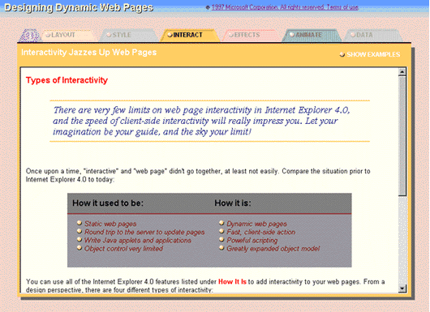
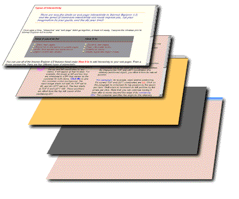

|
| ||
|
| ||
Ron Wodaski
Multimedia Madness, Inc.
February 3, 1998
 Download the commented code for the Web application in HTML format (self-extracting .EXE, 758K).
Download the commented code for the Web application in HTML format (self-extracting .EXE, 758K).
View the Web application online (please note that to view this application, you need to use Windows® 95 or Windows NT® with Internet Explorer 4.0 or later).
Contents
Introduction
Practices and Pitfalls
Built-in Navigation Using Tabs
Site-in-a-Page
Resizable Interface
Cascading Style Sheets
Interactivity
Conclusion
As I experimented with various features of Internet Explorer 4.0, I began to get the idea that there was more to this release than I had initially suspected. We all know the features by now: Active Channel™ technology, Dynamic HTML, a great interface, and so forth. The benefits of channels are self-evident, but as I explored the engine under Internet Explorer 4.0's hood, Dynamic HTML, I realized it is the harbinger of an even bigger future for the Web.
The Web page as we know it -- static images and text -- is a dinosaur. Dynamic HTML does more than bring interactivity and fun to Web pages: It creates an entirely new set of expectations for the Web page.
I set out to prove this by using Dynamic HTML to create a Web page that didn't look like any Web page I'd ever seen. Even some really hot pages I've seen still cling to basic notions of what a Web page should be -- it should consist of a top and a bottom, for example, or it should fill the container it sits in. What would happen, I asked myself, if I broke out of the mold entirely and created a Web application instead of a Web page? Could I push Dynamic HTML that far?
I set up these expectations for the application, which would push Dynamic HTML as hard as possible:During the two months I spent developing the sample application, I encountered numerous problems to solve using just Dynamic HTML. There was no use of ActiveX™ controls or Java applets; this was strictly an exercise in scripting, to show how powerful and flexible the scripting languages are. I used both JScript™ and Visual Basic® Scripting Edition (VBScript) for different parts of the application, demonstrating that both are equally adept at solving the problems of creating a large application.
Figure 1 shows the overall application. The sections that follow describe how I created each part of the application using Dynamic HTML.

Figure 1. Web application interface
First, I needed to implement the tabbed interface. There are several features of a typical tabbed dialog box that had to be included:
Here's the code for these features (if you download the sample, this code is in defaultie.htm):
<STYLE>
.examples {font: 9pt "arial"; font-weight:bold;
color:white; cursor:hand}
.examples1 {font: 9pt "arial"; font-weight:bold;
color:black; cursor:hand}
.examples2 {font: 9pt "arial"; font-weight:bold;
color:red; cursor:hand}
</STYLE>
var flashGray = 70;
var setGray = 45;
var noGray = 100;
function tabMouseOver() {
// Get the object that was moused over.
var e = window.event.srcElement;
if (e.tabType == 0) {
// The "show examples" hot spot was moused over;
change formatting.
e.className = "examples2";
}
else {
if (e.tabType == 1) {
// The DIV containing the tab image and text was clicked.
Highlight it.
flashTab(e);
}
else {
// Check the element's tabType property, set in script
// when the page was loaded.
if (e.tabType > 1) {
// One of the elements inside the tab DIV was moused over.
// Set "e" to the containing DIV.
e = e.parentElement;
if (e.turnedOn == false) {
// The DIV has not yet been highlighted; do it now.
flashTab(e);
}
}
}
}
}
// The following function looks complex, but the complexity only
// arises because there are multiple objects making up each tab.
// You can create a simple mouse out handler if only one object is
involved.
function tabMouseOut() {
// Get the object moused out (the object we are moving OUT OF).
var e = window.event.srcElement;
// Get the TO object (the object we are moving INTO).
var f = window.event.toElement;
// Use tabType property, set at document load, to see what type of
// element we moused out of.
if (e.tabType == 0) {
// Moused out of the "show examples" hot spot.
if (currentPage == 0)
e.className = "examples";
else
e.className = "examples1";
}
else {
// If TO object is null, nothing to do.
if (f != null) {
// Check to see if the OUT object contains the TO object.
if (e.tabType == 1 && !(e.contains(f))) {
// New object not contained; remove highlighting.
unFlashTab(e);
}
else {
// Also check elements that are inside of the tab's DIV,
just in case
// we missed the DIV's mouse out.
// This happens frequently, as the IMG is as large as the
DIV that contains it!
if (e.tabType > 1) {
// Get the parent.
e = e.parentElement;
if (e.turnedOn == true && !(e.contains(f))) {
// DIV not yet unhighlighted, so do it now.
unFlashTab(e);
}
}
}
}
}
}
// This function flashes a tab by increasing its opacity.
function flashTab(e) {
// Make sure this isn't the current page's tab!
if (e.seq != currentPage ) {
// Darken the IMG.
e.filters.alpha.opacity = flashGray;
// Set the turnedOn property so we know this object is
highlighted.
e.turnedOn = true;
if (currentTabFlash != e.seq) {
// If another tab is already highlighted, remove the highlight
now.
unFlashTab(document.all("tab"+currentTabFlash));
}
currentTabFlash = e.seq;
}
}
// This function "un" flashes a tab by decreasing its opacity.
function unFlashTab(e) {
// Make sure this isn't the current page's tab!
if (e.seq != currentPage ) {
// Reset opacity to a low value.
e.filters.alpha.opacity = setGray;
// Set the turnedOn property so we know this object is not
highlighted.
e.turnedOn = false;
}
}
In effect, I created a browser within a browser. When the application is viewed full-screen, the browser itself appears to be the background, and a floating area holds the navigation tabs and the current "page." I used a stacked series of <DIV>s and <IFRAME>s to build the interface. Figure 2 shows the page levels separated in a 3-D space.

Figure 2. Page levels separated in a 3-D space
At the bottom of the stack is the background <DIV>, which contains the title and copyright notice that appear at the top of the application as well as the blue gradient.
Above the background <DIV> is a <DIV> with a dark gray background color. It looks like a drop shadow under the rest of the elements, giving the application more of a 3-D look. I used a <DIV> because it creates less overhead than a filter shadow. A filter is more complex than a <DIV>, so a <DIV> displays more quickly. A <DIV> also uses less memory than a filter, and is a better choice whenever possible.
The third <DIV> up the stack contains the navigation elements in a series of aligned and/or stacked <DIV>s, each of which has its position property set to absolute so it can be positioned using coordinates. For example, each tab is a <DIV> that contains a tab image, a dot image, and text for the tab. Within the <DIV> for each tab, another <DIV> defines the shape of the floating "page" and includes the text and hot spots that appear just above it. All of the page titles exist at the same time in the same place, but only one has its visibility property set to visible at any time.
The next two levels are a pair of <IFRAME>s. One contains a Web page that describes the current topic, and the other contains a Web page with examples. The user can click a hot spot to determine which <IFRAME> is currently visible (the inactive <IFRAME> has its visibility property set to hidden).
Here's the code for these features (if you download the sample, this code is in defaultie.htm):
// Here is the HTML for the two IFRAMEs: <IFRAME ID=hiddenFrame src="page0.htm" STYLE="position:absolute; left:0px;
top:32px; width:788px; height:526px; visibility:hidden"> </IFRAME> <IFRAME ID=textFrame src="page0t.htm" STYLE="position:absolute; left:0px;
top:32px; width:788px; height:526px; visibility:hidden"> </IFRAME> // The "else" caluse of this function calls functions that determine // which IFRAME gets displayed. function documentClick() { // Get the object that was clicked. var e = window.event.srcElement; if (e.tabType >= 1 && e.tabType <=4) { // One of the tabs was clicked; load appropriate page. loadNewPage(currentPage,e.seq); } else { if (e.tabType == 0) { // The "show examples" hot spot was clicked. Show alternate IFRAME. if (e.state) showExamples(); else hideExamples(); } } } // This function causes the IFRAME with examples to be visible, // and the other IFRAME to be hidden. function showExamples() { document.all.hiddenFrame.style.visibility = "visible"; document.all.textFrame.style.visibility = "hidden"; xpage1SampleText.innerText = "SHOW TEXT"; xpage1SampleText.state = 0; } // This function causes the IFRAME with text descriptions to be visible, // and the other IFRAME to be hidden. function hideExamples() { document.all.hiddenFrame.style.visibility = "hidden"; document.all.textFrame.style.visibility = "visible"; xpage1SampleText.innerText = "SHOW EXAMPLES"; xpage1SampleText.state = 1; }
The typical Web page resizes itself automatically, unless you use fixed-width tables to define a specific width. With Dynamic HTML, you can define the size and location of page elements at any time, even after the page loads. Because I used a browser-in-a-browser-style of interface, I had to make sure that every element on the page was the right size for the current browser window.
I do this through the border around the floating page. This border is larger when the window size is larger, and smaller when the window size is smaller. You can easily detect the current screen resolution (through screen.width and screen.height) and calculate the border width, as well as the area of the floating page. Individual objects can be positioned:
item1.style.pixelLeft = theBorder + 10; item1.style.pixelTop = theBorder + 20;
and they can be sized as well:
item1.style.pixelWidth = screen.width - (theBorder * 2); item1.style.pixelHeight = screen.height - (theBorder * 2);
To respond to window-resizing events, simply associate a function with the event:
<SCRIPT LANGUAGE="JSCRIPT">
function resizeAll() {
// Perform resizing here.
}
</SCRIPT>
<BODY onresize="resizeAll();">
</BODY>
It is just as easy to respond to other events, such as a key press, mouse click, or mouse movement. Many examples are available by looking at the source code for the application.
For example, here is the code that processes key presses:
function documentKeyPress() {
// Get the key that was pressed.
key = window.event.keyCode;
// If a number key was pressed, load the appropriate page.
if (key >= 48 && key <=54)
loadNewPage(currentPage,key-48);
else {
switch (key) {
case 72: // upper-case H (for Hide)
case 104: // lower-case h
if (currentPage != 0) {
hideExamples();
}
break;
case 83: // upper-case S (for Show)
case 115: // lower-case s
if (currentPage != 0) {
showExamples();
}
break;
default:
// Let the user know they pressed an unsupported key.
window.status = "Unsupported key code: "+key;
break;
}
}
}
Internet Explorer 4.0 provides support for a wide range of formatting, positioning, and other kinds of styles. This enables you to specify the appearance of your documents in a central file, called a style sheet, and apply the styles from that to every document on the site. You can override the specification in a particular document to deal with unique situations. The sample application uses a style sheet to specify formatting such as font size, italics, boldfacing, or font family. In addition, the style sheet specifies such things as the padding between line items (the <LI> tag), the color of text when the mouse moves over it, the images to use for bullets, and so forth.
For example, here is the formatting for paragraphs that have the class intro:
P.intro {font: 10pt "arial";
font-weight:normal; color:#400000}
Line items use this style specification:
LI {font: 10pt "arial";
font-weight:normal; font-style:italic;
list-style-image:url(li.gif); color:#811111; padding:4}
Style sheets provide a consistent look throughout the application. There are actually two kinds of pages, and each page has its own rules in the style sheet. This enables the visitor to immediately know what kind of page they are viewing.
One practical advantage of style sheets became evident near the completion of the project. I wasn't satisfied with the appearance of the featured text near the top of the descriptive pages. By editing the style sheet, I changed the font face, the font size, and color, as well as the color, style, and thickness of the top and bottom borders, for all pages in just a few seconds. I was able to quickly test five or six combinations before settling on the best one.
Here's the style sheet for the whole application (if you download the sample, look in infostyle.css):
<STYLE>
.nothing {}
.tab7Text {font-family:arial; font-size:7pt; font-weight:bold;
color:black; cursor:hand}
.tab7Text2 {font-family:arial; font-size:7pt; font-weight:bold;
color:black; cursor:hand}
.tab7TextRed {font-family:arial; font-size:7pt; font-weight:bold;
color:darkred; cursor:hand}
.tab8Text {font-family:arial; font-size:8pt; font-weight:bold;
color:black; cursor:hand}
.tab8Text2 {font-family:arial; font-size:8pt; font-weight:bold;
color:black; cursor:hand}
.tab8TextRed {font-family:arial; font-size:8pt; font-weight:bold;
color:darkred; cursor:hand}
.tab9Text {font-family:arial; font-size:9pt; font-weight:bold;
color:black; cursor:hand}
.tab9Text2 {font-family:arial; font-size:9pt; font-weight:bold;
color:black; cursor:hand}
.tab9TextRed {font-family:arial; font-size:9pt; font-weight:bold;
color:darkred; cursor:hand}
.tab10Text {font-family:arial; font-size:10pt;
font-weight:bold; color:black; cursor:hand}
.tab10Text2 {font-family:arial; font-size:10pt;
font-weight:bold; color:black; cursor:hand}
.tab10TextRed {font-family:arial; font-size:10pt;
font-weight:bold; color:darkred; cursor:hand}
P {font: 10pt "arial"; font-weight:normal}
P.intro {font: 10pt "arial"; font-weight:normal;
color:#400000}
TD {font: 10pt "arial"; font-weight:normal}
TD.head {font: 12pt "arial"; font-weight:bold}
LI {font: 10pt "arial"; font-weight:normal;
font-style:italic; list-style-image:url(li.gif); color:#811111;
padding:4}
LI.tableList {font: 10pt "arial"; font-weight:normal;
font-style:italic; list-style-image:url(lit.gif); color:#811111;
padding:0}
LI.myList {font: 10pt "arial"; font-weight:normal;
font-style:normal; list-style-image:url(); color:#811111}
.returnTop {font: 8pt "arial"; font-weight:normal;
color:darkred}
.bottomLine {font: 14pt "times"; font-weight:normal;
color:darkblue;
font-style:italic; padding:7}
.content {font: 9pt "arial";font-weight:
normal;color: #B22222}
.heading {font: 12pt "arial";font-weight: bold;color:
red}
.heading1 {font: 10pt "arial";font-weight: bold;color:
red; font-style:italic}
.heading2 {font: 10pt "arial";font-weight: bold;color:
black}
.myPRE {font: 8pt "courier new";font-weight:
normal;color: #B22222; font-weight:bold}
.title {font: 14pt "arial"; font-weight:bold}
.examples {font: 9pt "arial"; font-weight:bold;
color:white; cursor:hand}
.examples1 {font: 9pt "arial"; font-weight:bold;
color:black; cursor:hand}
.examples2 {font: 9pt "arial"; font-weight:bold;
color:red; cursor:hand}
.pTitle {font: 12pt "arial"; font-weight:bold}
LI.menuText {color:#FFFFFF; font-weight:bold; cursor:hand;
font-size:9pt; line-height:1.7; list-style-image:url(libarx.gif);
font-style:normal; padding:0}
LI.menuTextx {color:#FF7777; font-weight:bold; cursor:hand;
font-size:9pt; line-height:1.7; list-style-image:url(libarx.gif);
font-style:normal; padding:0}
P.tempText {font-size:8pt; color:#000055}
.tableHead { font-size:12pt;
font-family:verdana,arial,helvetica; color:#0000FF; cursor:hand}
.tableHeadRed { font-size:12pt;
font-family:verdana,arial,helvetica; color:#FF0000; cursor:hand}
</STYLE>
The application is highly interactive:
There are many more examples, but that is enough to get my point across. As a designer, once you start adding interactivity to Web pages, it's hard to think of them as simply pages. They become Web applications, and this perspective opens up a multitude of new possibilities for the Web.
Ron Wodaski is president of Multimedia Madness, Inc.  , a consulting company that provides Web design and development services. He has worked as a journalist with National Public Radio and various newspapers and magazines, and has published more than a dozen books on programming practices, multimedia, virtual reality, graphics, and the Internet.
, a consulting company that provides Web design and development services. He has worked as a journalist with National Public Radio and various newspapers and magazines, and has published more than a dozen books on programming practices, multimedia, virtual reality, graphics, and the Internet.
Did you find this material useful? Gripes? Compliments? Suggestions for other articles? Write us!
© 1999 Microsoft Corporation. All rights reserved. Terms of use.